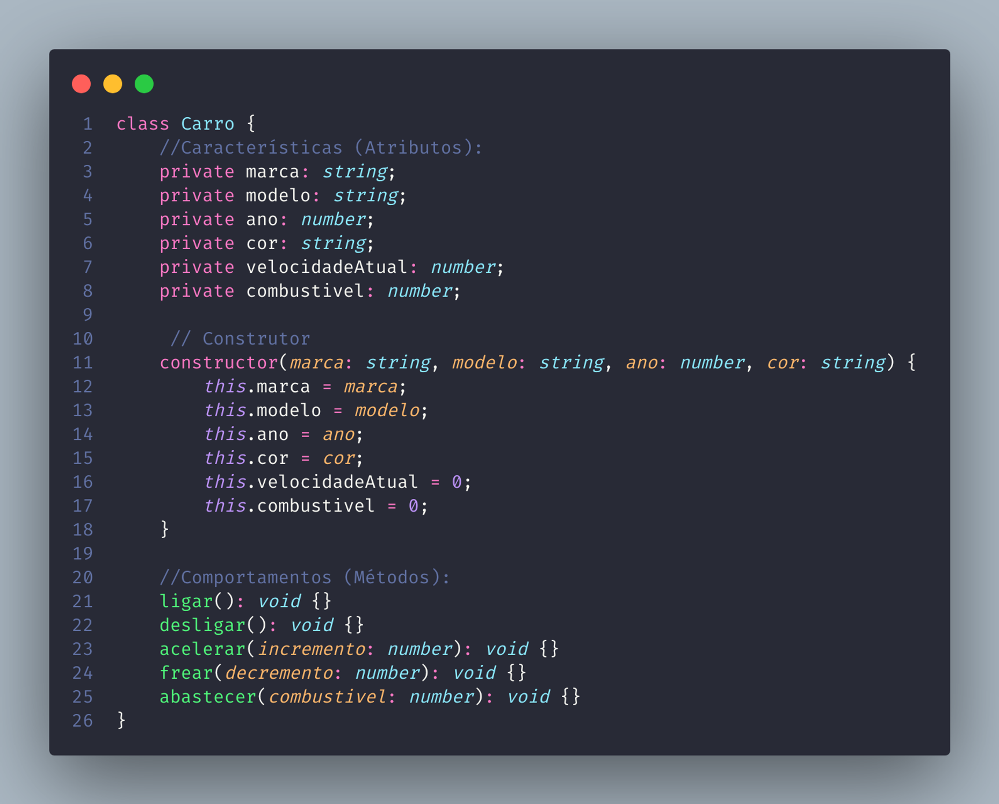
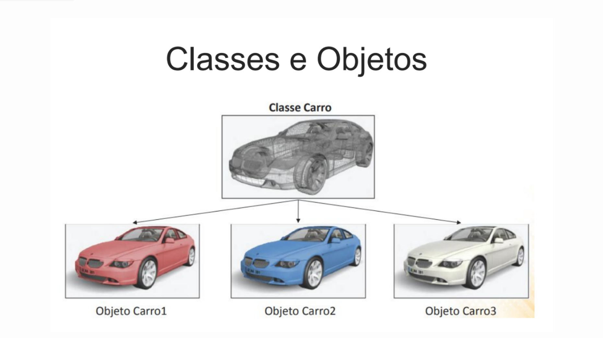
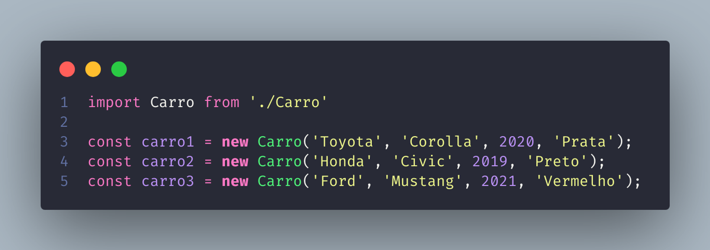
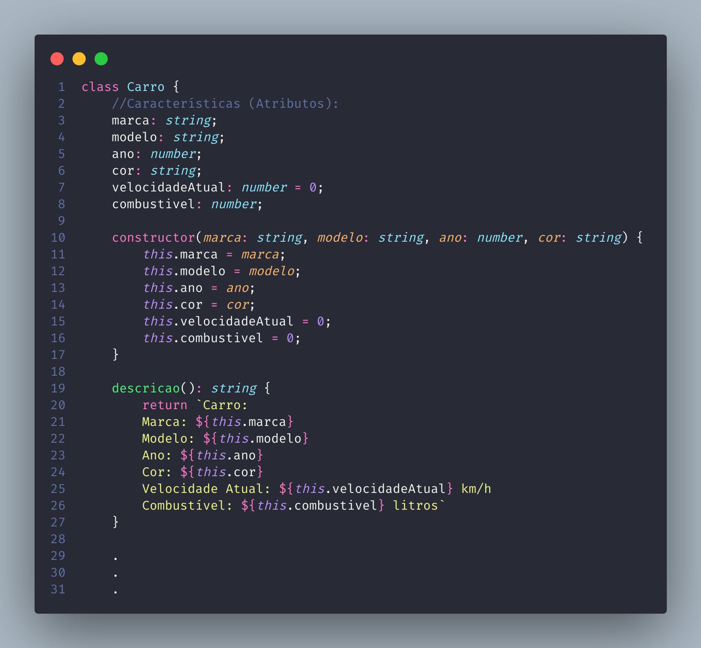
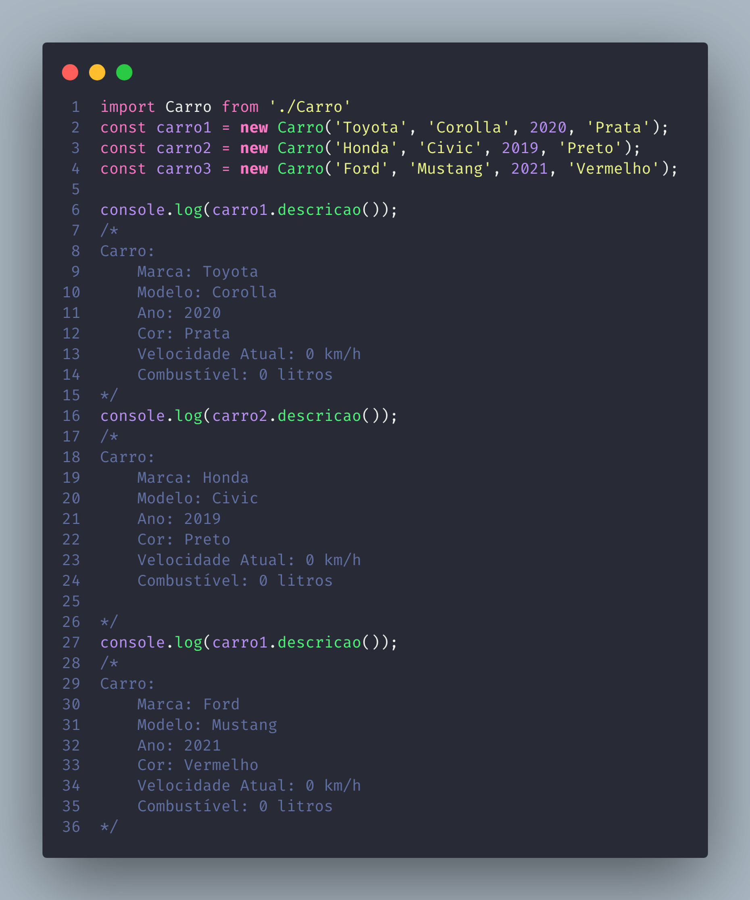
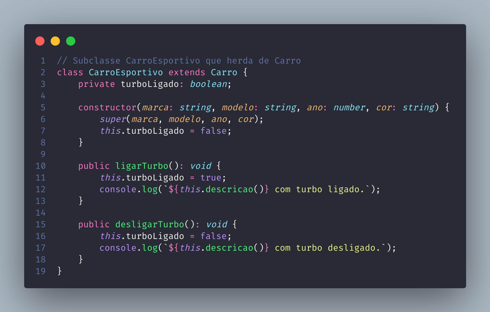
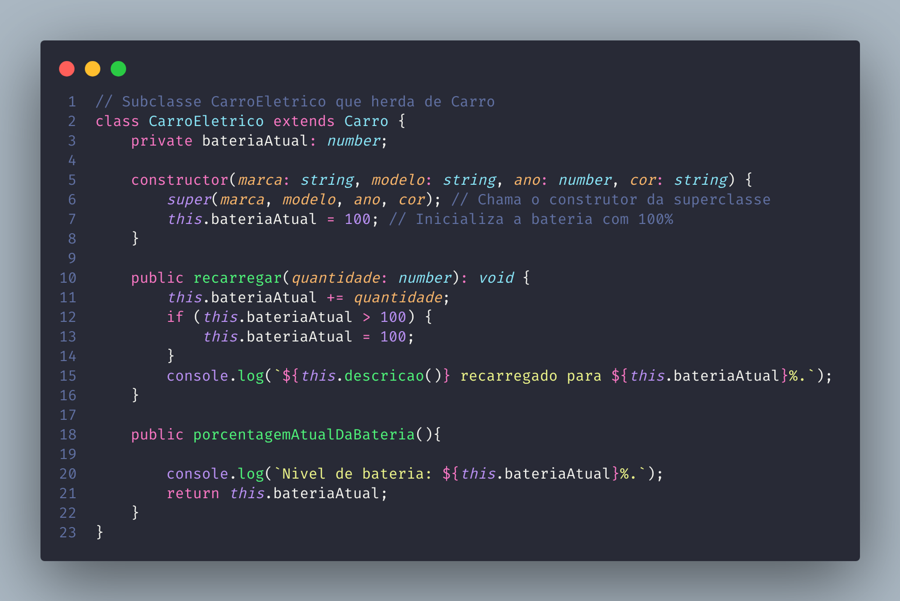
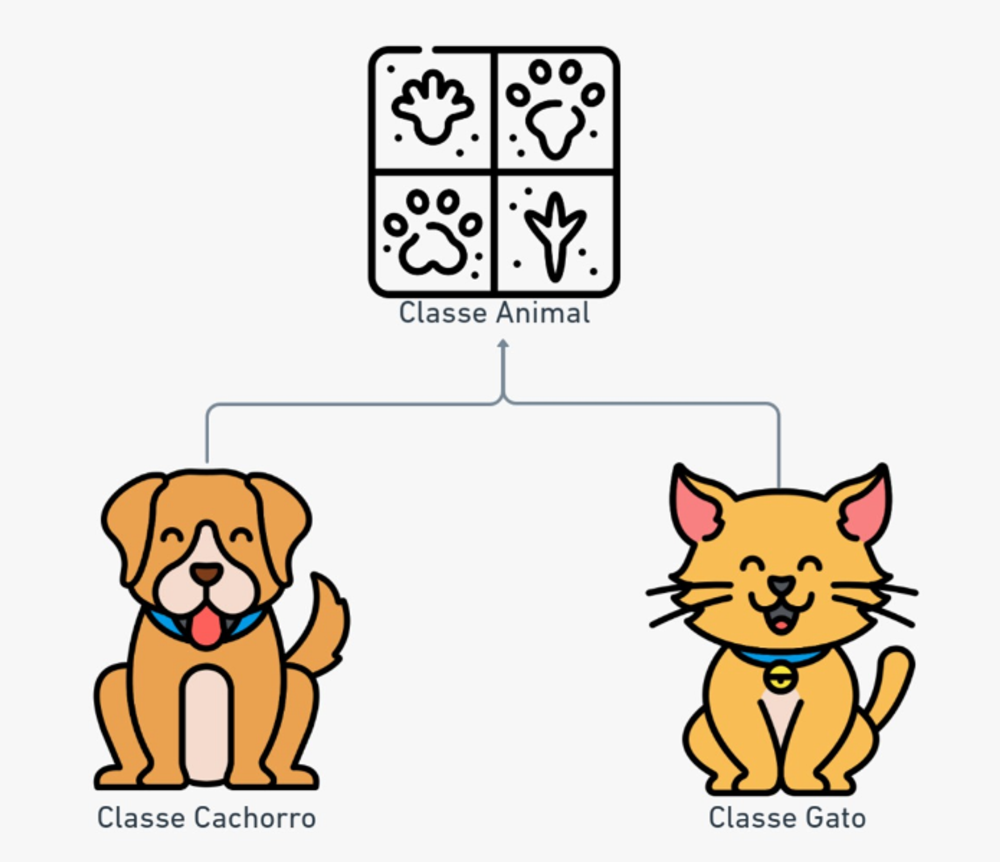
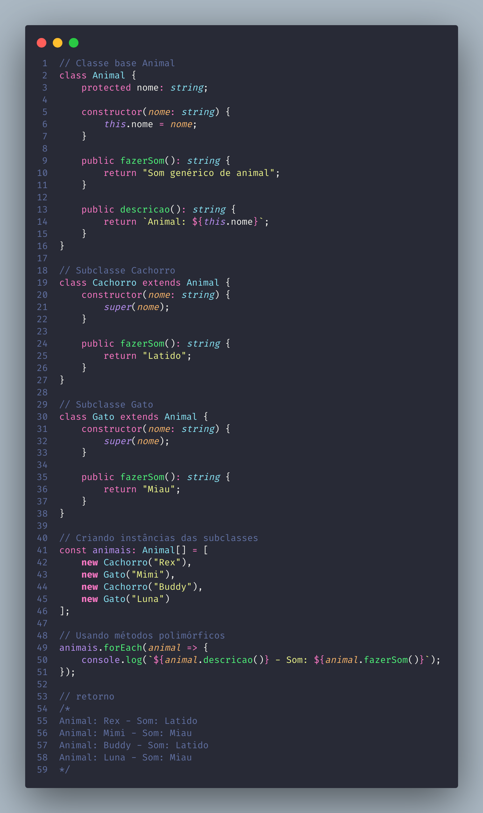

Programação Orientada a Objetos
Oque e POO (Programação orientada a Objetos)
Programação Orientada a Objetos (POO) é um paradigma de programação que visa organizar, estruturar e desenvolver códigos de maneira mais intuitiva e próxima do mundo real. Esse método permite criar representações concretas de objetos do nosso dia a dia, facilitando a compreensão e manipulação do “codigo” que e desenvolvemos
A “Orientação a Objetos” é uma técnica de programação que modela elementos do mundo real para código. Por exemplo, itens do nosso cotidiano, como cadeiras ou carros, são representados no código com suas próprias caracteristivas e comportamentos, com isso tornamos o desenvolvimento de softwares mais intuitivo e compreensível, porque criamos representações do mundo real
Para facilitar a compreensão, vou descrever a representação de um carro, explicando o que são classe, construtor e instância. Em seguida, abordaremos cada um dos quatro pilares da POO: Abstração, Encapsulamento, Herança e Polimorfismo
Classe
Classe é um modelo ou molde de construção de objetos. Ela serve para criar modelos que compartilham caracteristicas em comum
Para representar uma classe, precisamos abstrair suas características e comportamentos. Usando o
exemplo
de um carro, vou definir a classe com alguns atributos e métodos essenciais. Aqui estão alguns
exemplos
simplificados
Características (Atributos): marca, modelo, ano, cor, velocidadeAtual,
tipoCombustivel
Comportamentos (Métodos): ligar, desligar, acelerar, frear, abastecer
Construtor
Um construtor é um método especial de uma classe que é chamado automaticamente quando uma nova instância (objeto) dessa classe é criada. Ele serve para inicializar os atributos do objeto com valores específicos e para executar qualquer configuração inicial necessária
Como podemos ver no exemplo abaixo, temos um construtor que espera receber 4 argumentos: marca, modelo, ano e cor. No entanto, ele inicializa, além desses 4 atributos, outros dois atributos que não foram passados: velocidadeAtual e tipoCombustivel. Isso mostra que o construtor não precisa necessariamente receber todos os atributos; alguns podem ser inicializados internamente na classe, como neste exemplo
No exemplo, podemos ver o uso da palavra reservada "this" seguida do nome do atributo. "This" é uma palavra reservada em POO usada para referenciar um atributo da própria classe. Quando utilizamos "this", estamos dizendo que queremos acessar os atributos ou métodos da instância atual da classe
No exemplo, estamos inicializando os valores dos atributos da classe com os valores fornecidos ao construtor:
Instâncias
É um objeto especifico criado a partir de um modelo de uma classe “molde”, possuindo suas características e comportamentos
Na imagem abaixo podemos visualizar de forma clare esse comportamento.
Para criar uma instância de uma classe, usamos a palavra reservada "new". Essa palavra-chave chama
automaticamente o método construtor da classe, onde passamos os atributos necessários
Ao fazer
isso, criamos um objeto baseado nessa classe.
Por exemplo, no código abaixo, criamos três objetos diferentes, cada um representando um carro distinto, mas todos usando a mesma classe base Carro
Dessa forma todas as intancias de carro, possuem o mesmo comportamento e caracteristicas da classe Carro, onde todas possuem os mesmos atributos e métodos.
Nos exemplos abaixo, criamos um novo método que retorna a descrição do carro. Esse método simplesmente retorna os atributos do carro em formato de texto
Na segunda imagem, podemos ver que ao chamar o método descricao, ele retorna as características de cada objeto de forma única. Cada instância tem seu próprio comportamento
 Neste exemplo, o método descricao retorna uma string que descreve os atributos do carro. Quando chamamos descricao em cada instância, ele retorna as características únicas de cada objeto, demonstrando que cada instância possui seu próprio comportamento e dados
Os 4 pilares de POO
Abstração
Algumas pessoas não consideram a abstração um dos pilares da POO, mas ela pode ser vista como um dos conceitos mais importantes. Usamos a abstração para selecionar as características essenciais de algo do mundo real e representá-las no código. Se fizermos isso de maneira inadequada, podemos adicionar complexidade desnecessária ou tornar o código confuso. Portanto, é crucial lembrar que, se algo não faz sentido no mundo real, provavelmente não fará sentido no código
Em nosso exemplo da classe Carro, pegamos todas as características de um carro, abstraímos essas características e criamos uma classe que representa o carro
Encapsulamento
Encapsulamento é o pilar da POO que protege o código, estabelecendo limites claros sobre o que pode ser acessado por usuários, diferentes objetos e outras partes do sistema. Imagine criar um carro sem nenhuma proteção para o motor, completamente exposto para que qualquer pessoa possa modificá-lo, mesmo sem entender do assunto. Isso seria perigoso e problemático, certo? Da mesma forma, na programação, não precisamos entender como cada parte interna de um sistema funciona, apenas como interagir com ele de forma segura. O encapsulamento garante que as partes críticas do código estejam protegidas
No nosso exemplo da classe Carro, utilizamos dois tipos de modificadores de acesso para implementar o encapsulamento: private e public
- Private: Usamos o modificador private para proteger os atributos da classe, como marca, modelo, ano, cor, velocidadeAtual e tipoCombustivel. Isso significa que esses atributos só podem ser acessados e modificados de dentro da própria classe Carro. Ao torná-los privados, garantimos que nenhum código externo possa alterar diretamente esses valores, mantendo a integridade dos dados
- Public: Usamos o modificador public para os métodos da classe, como ligar, desligar, acelerar, frear, abastecer e descricao. Isso permite que esses métodos sejam acessados de fora da classe, permitindo que outras partes do programa interajam com os objetos Carro de maneira controlada e segura. Por exemplo, um objeto Carro pode ser instruído a ligar, acelerar ou exibir sua descrição, mas os detalhes internos de como essas ações são realizadas permanecem encapsulados e protegidos.
Herança
Herança é um dos pilares fundamentais da Programação Orientada a Objetos (POO). Ela permite que uma classe (chamada de classe derivada ou subclasse) herde atributos e métodos de outra classe (chamada de classe base ou superclasse). Isso promove a reutilização de código e a criação de hierarquias de classes
Imagine que uma fábrica de automóveis queira expandir suas vendas para novos tipos de veículos, como motocicletas e carros eletricos. Em sua linha de produção, eles passam por várias etapas diferentes, mas percebem que, apesar de terem produtos distintos e etapas específicas para cada um, há etapas comuns entre os produtos. Por exemplo, todos têm um motor, um número de assentos e um número de rodas. Isso é herança! Quando todas as classes têm características comuns, elas são herdadas de uma superclasse
Observe abaixo que criamos duas novas classes, CarroEsportivo e CarroEletrico, cada uma com suas próprias implementações que a classe Carro não possui
- CarroEsportivo: Esta classe herda todas as características da classe Carro, mas adiciona uma funcionalidade extra, o turbo. Portanto, a classe CarroEsportivo possui dois métodos adicionais: ligarTurbo e desligarTurbo.
- CarroEletrico: Esta classe também herda todas as características da classe Carro, mas como é um carro elétrico, possui dois métodos adicionais: recarregar e porcentagemAtualDaBateria.
Note que ambas as subclasses podem chamar o método descricao, que é definido na classe Carro. Isso exemplifica o processo de herança, onde as classes filhas têm acesso a todos os métodos e atributos da classe pai que estão definidos como public ou protected.
 Polimorfismo
Polimorfismo permite que objetos de diferentes classes derivadas de uma mesma superclasse respondam de maneiras diferentes a chamadas de métodos comuns. Isso acontece porque as subclasses podem sobrescrever métodos da classe base (seguindo o contrato do méttodo da classe pai), fornecendo implementações específicas. O principal benefício do polimorfismo é a flexibilidade e a capacidade de reutilizar código, permitindo que uma interface comum seja usada para representar métodos de diferentes classes, tornando o sistema mais fácil de manter e expandir
Para facilitar o entendimento, vamos usar o exemplo da classe Animal. Imagine uma classe base Animal com um método polimórfico fazerSom. Subclasses como Cachorro e Gato herdam de Animal e implementam fazerSom de maneiras específicas. Quando iteramos sobre uma lista de objetos do tipo Animal e chamamos fazerSom, cada objeto responde de acordo com sua própria implementação. Isso mostra como o polimorfismo permite tratar objetos de diferentes classes de maneira uniforme, ao mesmo tempo executando comportamentos específicos de cada tipo de objeto.
No exemplo a baixo, podemos ver que a classe Cachorro e Gato são subclasses de Animal. Cada uma sobrescreve o método fazerSom para fornecer um som específico. Quando chamamos fazerSom em uma lista de objetos Animal, cada objeto responde com seu próprio som, demonstrando o polimorfismo.
Observe que com o polimorfismo cada classe pode ter seu próprio comportamento sobrescrevendo os métodos da classe pai. No exemplo das classes Cachorro e Gato, a classe Cachorro sobrescreve o método para fazer o som de latir, enquanto a classe Gato sobrescreve o mesmo método para fazer o som de miar
Referencias
https://www.canva.com/design/DAFE7PxSb3k/3Mq2fKO4ybnSKiJM4TWYmg/edit
https://blog.rocketseat.com.br/entendendo-a-abstracao-em-poo-com-java/
https://www.freecodecamp.org/portuguese/news/os-quatro-pilares-da-programacao-orientada-a-objetos-com-javascript/
https://caiocnoronha.medium.com/programa%C3%A7%C3%A3o-orienta%C3%A7%C3%A3o-a-objetos-poo-759d96dda910
https://pt.stackoverflow.com/questions/240186/n%C3%A3o-consegui-entender-muito-bem-o-encapsulamento-na-poo